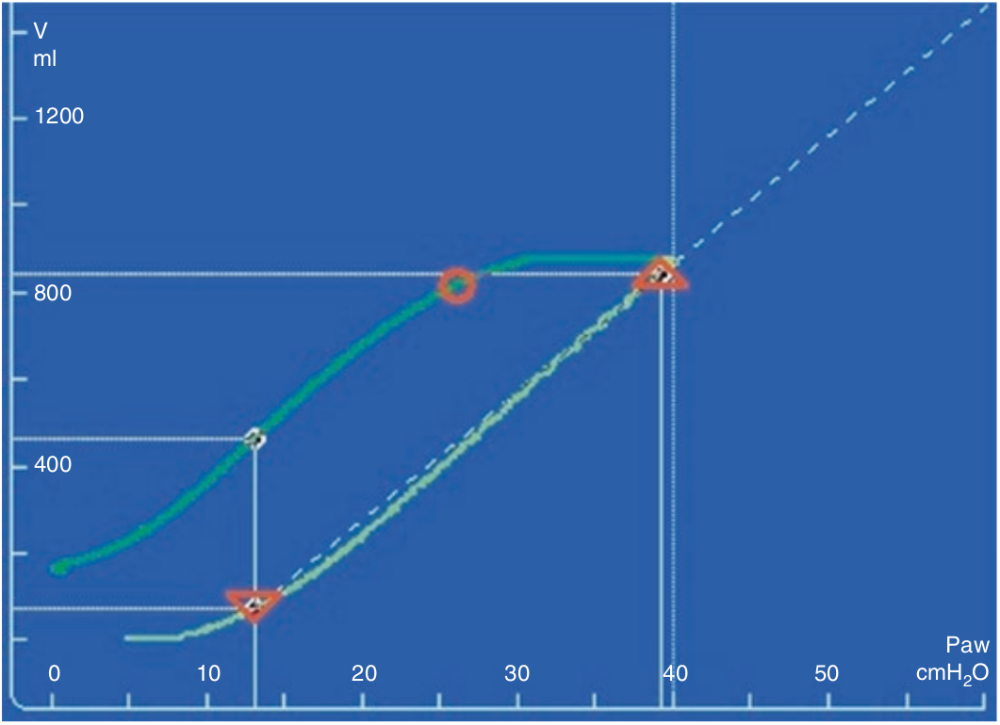

باز بسته شدن در تمام طول فاز نزولی لوپ ادامه می یابد. شاخه نزول در ابتدا تقریبا افقی است. یعنی در فشار بالا باز بسته شدن روی نمی دهد یا خیلی کم روی میدهد. سپس به نقطه ای می رسیم که شیب شاخه نزولی تغییر میکند. این نقطه را بنام زانو یا صحیح تر نقطه حداکثر انحنا می نامند. این نقطه معمولا بالای فشار ۲۰ سانتی متر آب قرار دارد. پائین تر از این نقطه بازبسته شدن همراه با تخلیه ریه روی میدهد. از این نقطه تا پائین، معمولا شیب بصورت خطی باقی می ماند. در ریه های دارای استعدا زیاد برای بازگشائی، حجم در پایان تخلیه بیشتر از صفر است. این بدان معنی است که همه حجم بازگشائی شده دچار باز بسته شدن نمی گردد و بنابراین ظرفیت باقیمانده عملی نسبت به قبل از اجرای مانور بیشتر است.

در مورد شاخه نزولی لوپ فشار-حجم کدام مورد صحیح است؟
۱ - معمولا خطی است
۲ - نشان دهنده تغییر شیب در فشار های بالا می باشد
۳ - نشان میدهد که تخلیه و بازبسته شدن در فشارهای متفاوتی رخ میدهد
۴ - می تواندی به ارزیابی استعداد بازگشائی ریه کمک کند
۵ - در صورت وقوع بازگشائی در حین مانور، حجم به همان میزان قبل باز میگردد